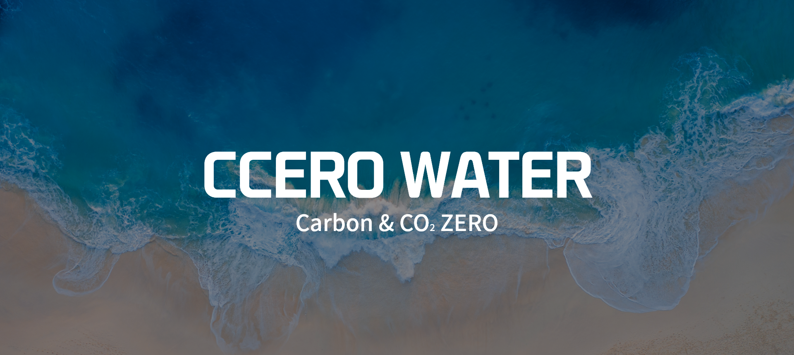
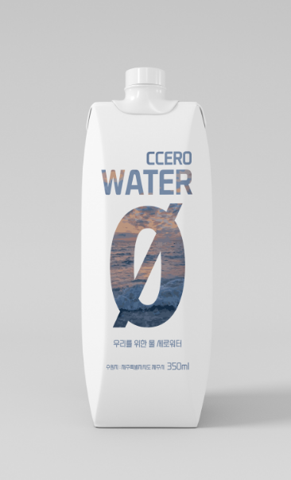
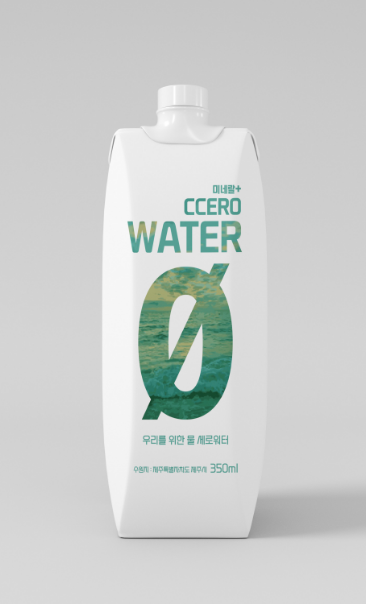
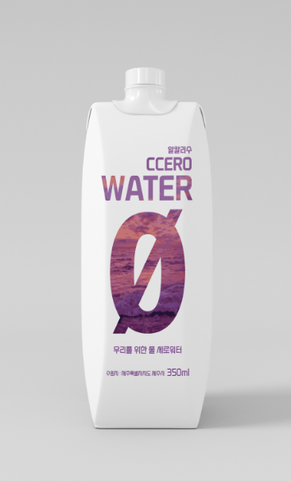
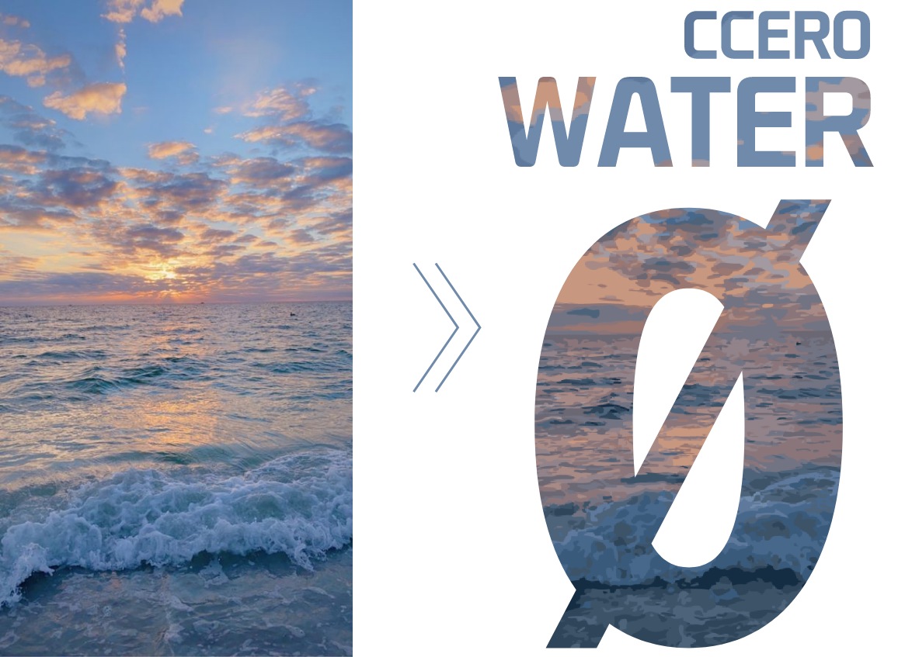
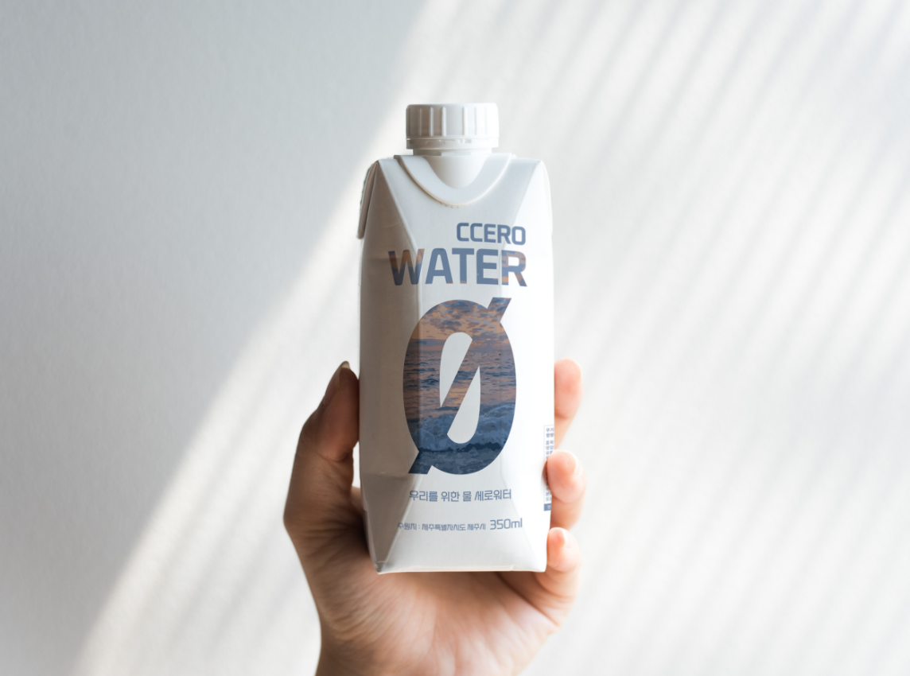
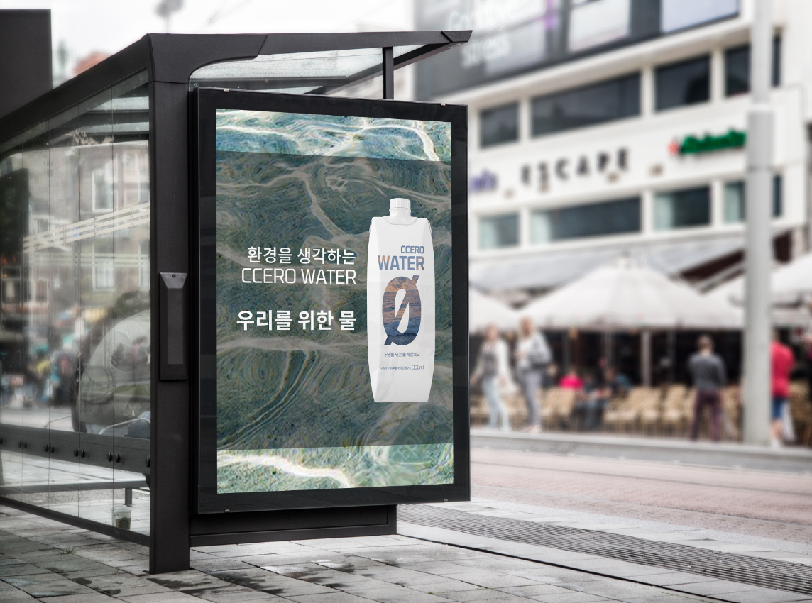
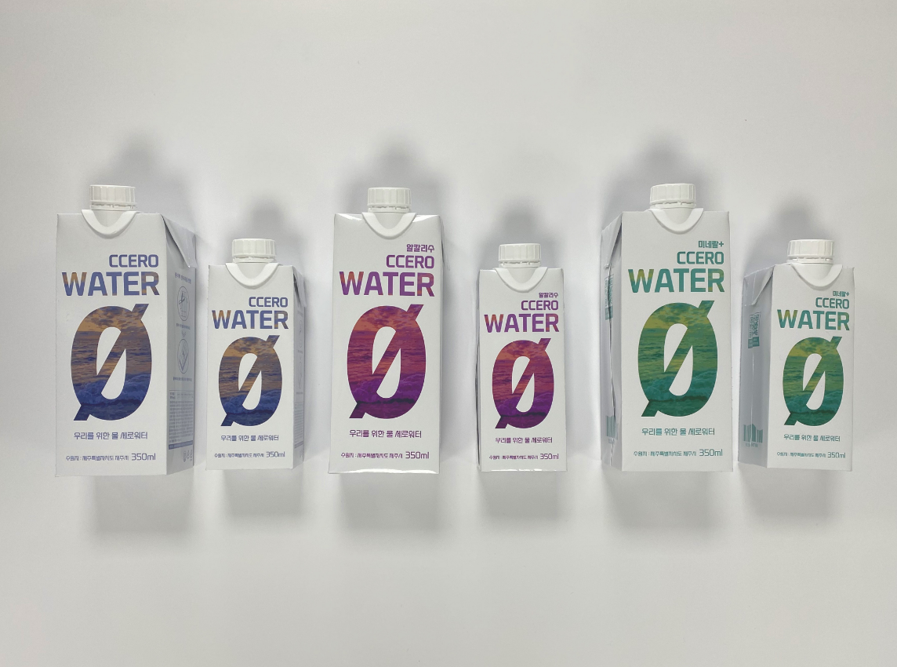
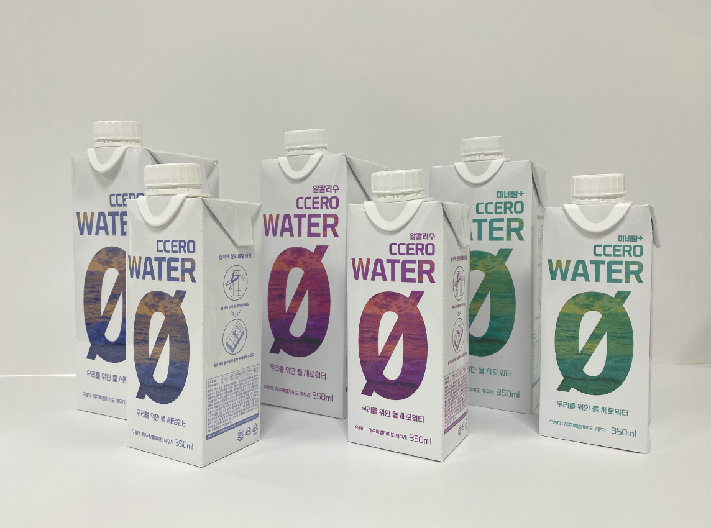

CCERO WATER
환경을 생각하는 물 세로워터입니다.
CCERO에서 CC는 CO2와 CARBON의 이니셜로 이산화탄소
사용량을 줄이고 탄소중립을 실천하자는 뜻을 담았습니다.
왜 이산화탄소(CO2)를 저감해야 하는가?
석유, 석탄 등의 화석 에너지가 연소(산소와 결합)할 때에는 지구 온난화, 산성비,
스모그 등의 원인이 되는 CO2, SOX, NOX 등 온실가스 다량 배출
플라스틱 대신 종이!
최근 지구온난화와 해양 쓰레기 문제등이 고조되면서 개인과 기업은 환경문제에 관심을
갖기 시작했습니다. 플라스틱은 생산하는데 탄소를 많이 배출하기에 지구온난화를
가속화하고, 해양 쓰레기가 될시 해양 생태계에 큰 피해를 줍니다.
그렇기에 플라스틱이 흔히 많이 사용되고 있는 패키지가 무엇인가 생각했는데 가장 흔하면서
필수적으로 구매하게되는 플라스틱 물병이 플라스틱 물병이 있었습니다. 플라스틱 물병을
종이팩 물병으로 교체하면 환경문제해결에 많은 도움이 될거라 예상됩니다.



기본디자인
미네랄+
알칼리수
GRAPHIC MOTIF
물의 시원한 이미지와 환경을 떠올리게 하기위해 바다이미지를 이용했습니다.

MOCKUP


PACKAGE
실제 제작된 CCERO WATER입니다.

